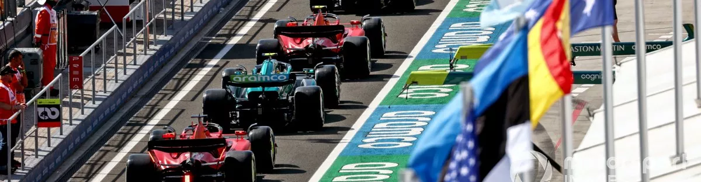
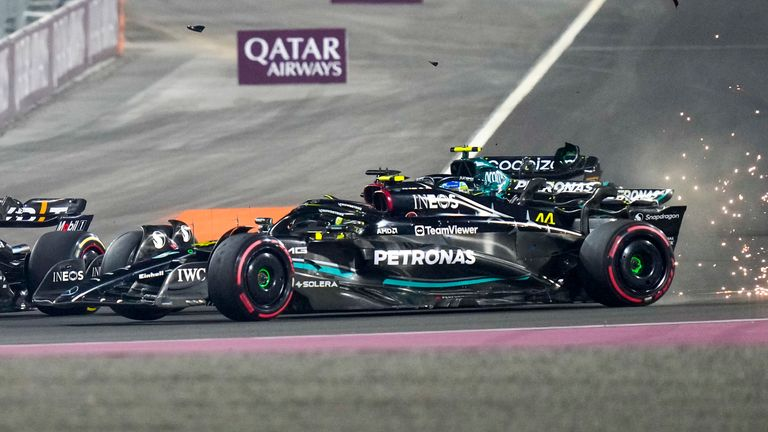
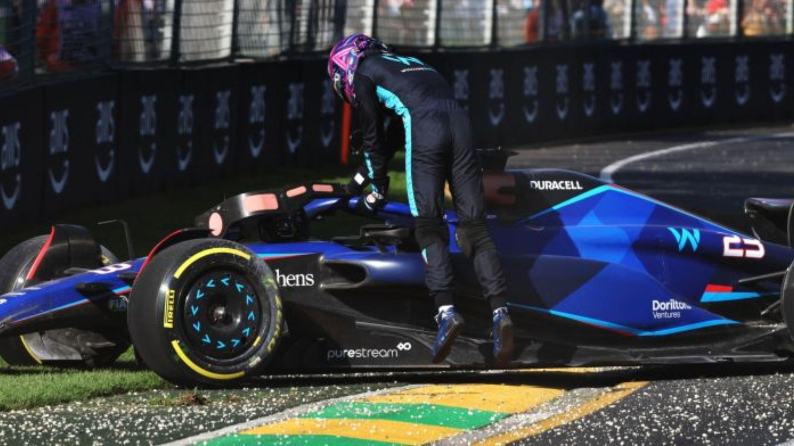
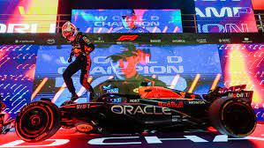

|

Formula One adalah kelas balap internasional tertinggi untuk mobil balap formula roda terbuka satu tempat duduk yang disetujui oleh Fédération Internationale de l'Automobile. Kejuaraan Dunia Formula Satu FIA telah menjadi salah satu bentuk balap utama di seluruh dunia sejak musim perdananya pada tahun 1950. |
|||
|
MERCEDES CRASH Hamilton tersingkir dari balapan setelah kecelakaan tikungan pertama dengan Russell yang menyebabkan juara dunia tujuh kali itu tersungkur ke gravel trap, sementara Russell terlempar ke posisi belakang. Russell melakukan pemulihan yang mengesankan ke posisi keempat, sementara Hamilton langsung tersingkir. |
KECELAKAAN ALBON Balap Formula 1 Grand Prix Australia di Sirkuit Albert Park dihentikan di lap ke-9 setelah Alexander Albon (Williams) mengalami kecelakaan di lap ke-8. Mobil Williams Albon melintir di Tikungan 3, lalu menabrak dinding pembatas di Tikungan 4. Mobil Albon mengalami kerusakan di bagian depan dan sayap belakang. |
MAX WORLD CHAMP 23 Max Verstappen berhasil menjadi juara dunia Formula 1 2023. Ini setelah kegagalan Sergio Perez finis di Sprint Race F1 GP Qatar. Pada Sprint Race yang dihelat di Sirkuit Lusail, Minggu (8/10/2023) dini hari WIB, Verstappen cuma butuh minimal tiga poin untuk mempertahankan gelar juara dunianya. congratsss.. for max |
|
| p | |||